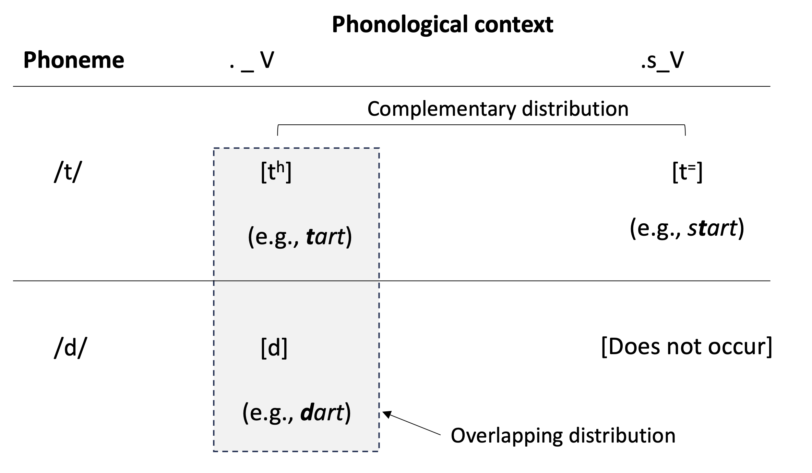
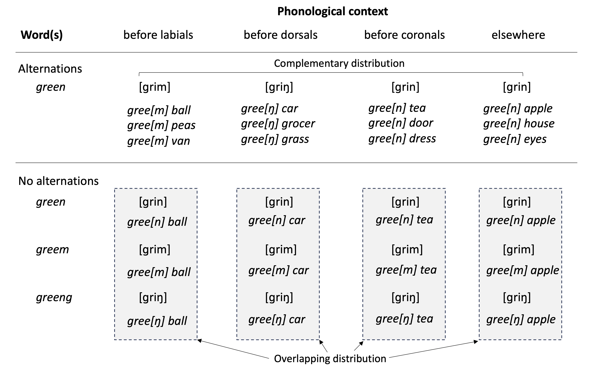
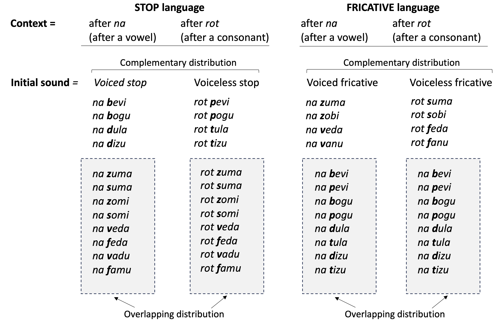
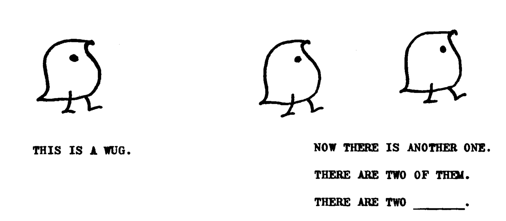
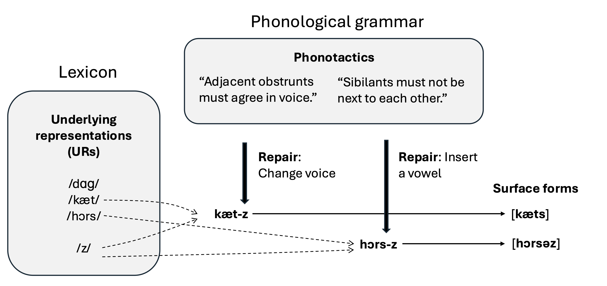
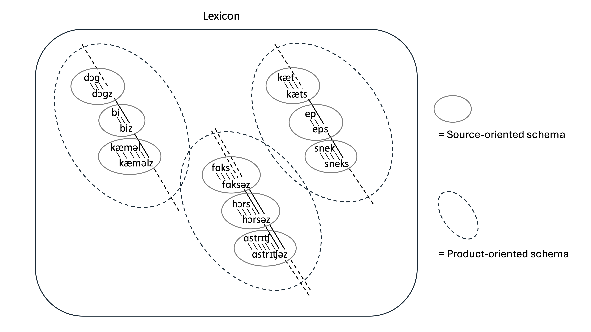

Chapter 7 Contextual variation
7.1 Chapter overview
Imagine you are a young child, and you hear your mother saying the following:
- “And what’s that she’s got ([gɑt]) there?”
- “She’s got ([gɑʔ]) a funny thing.”
- “I got ([gɑʧ]) you.”
- “I got ([gɑɾ]) it!”
🔈 These utterances are taken from a single recording session with an English-learning 15-month-old girl from the Providence Corpus(Demuth et al., 2006). You can listen to them here.
These examples demonstrated that the same sound categories and word forms that infants and children hear can vary in how they are pronounced. The last sound of the word got may be produced as a voiceless alveolar stop [t] (as in Example 1), as a glottal stop [ʔ] (Example 2), a voiceless palatal affricate [ʧ] (Example 3), or a flap or tap [ɾ] (Example 4). As a learner, you need to figure out whether these phonetically different sounds belong to the same sound category (or phoneme) or separate ones. It turns out they are all variant pronunciations of the same phoneme /t/ in English. But if the sound in question were something else, say [d], then it would belong to a different phoneme, and therefore, it would be part of a different word. Furthermore, the different pronunciations of /t/ usually happen in specific phonological contexts, such as the affricate before /j/ in “I got ([gɑʧ]) you” and the flap between a stressed and a reduced unstressed vowel in “I got ([gɑɾ]) it!”. So, children need to learn that the same phoneme can have different phonetic realizations, but not without limits, and often in particular contexts. They also need to learn that the same word may be said differently, again, in a systematic way.
It would be useful to distinguish different types of such phonological variation. The phenomenon of the same phoneme being pronounced differently is known as allophony, and the different pronunciations of the same phoneme are called allophones or phonetic variants. The phonetic variation of the same word, or more generally, the same morpheme —any unit of meaning, including suffixes such as the plural marker -s in English— is known as allomorphy or (phonologically-conditioned) alternation. The different pronunciations of a morpheme are called allomorphs or alternants. Because the terms allophony and allomorphy can be easily confused, I will use the term alternation to refer to the different realizations of a morpheme or a word.
In this chapter, we will look at when children learn allophony and alternations, and how they may be accomplishing the task. Following the structure of the previous chapters, we will start by looking at evidence from perception and recognition, and then at that from production.
7.2 Perception of allophones and recognition of alternants
7.2.1 Perception of allophones
By definition, allophones of the same phoneme are not contrastive. In the example above, the different pronounciations of the last sound of the word got are all instances of the phoneme /t/. Still, allophones are phonetically different sounds. Therefore, before infants become attuned to the phonemic contrasts of the language, we expect them to be able to hear the difference between allophones. Indeed, infants are perceptually sensitive to allophonic differences when they are very young. Using the High Amplitude Sucking paradigm, Hohne & Jusczyk (1994) showed that English-learning 2-month-olds discriminate pairs such as nitrate and night rate. Although they have the same sequence of phonemes, /naɪtret/, nitrate and night rate are pronouced differently. In typical North American pronunciation, the first /t/ in nitrate is aspirated, released into the following /r/, and also retroflexed due to coarticulation with /r/. In contrast, the first /t/ in night rate is unaspirated, unreleased, and not retroflexed. The 2-month-olds’ response to the difference between nitrate and night rate indicates that they are sensitive to these phonetic differences between the two allophones of /t/.
But when do infants learn that the phonetic differences between allophones of the same phoneme are irrelevant to phonological contrasts in the language? As we saw in Chapter 3, infants undergo perceptual reorganization between 6 and 10 months of age, after which their sensitivity declines for phonetic differences that are not contrastive in their native language. We saw this effect demonstrated in contrasts of foreign languages: English-learning infants becoming less responsive to the differences between German high front-rounded vs. back-rounded vowels ([y]-[u]) or Hindi retroflex vs. dental stops ([ʈ]-[t̪]). But infants usually do not hear these sounds corresponding to foreign language contrasts. By contrast, they frequently hear the allophones of the phonemes in the native language. Do infants stop responding to differences between two sounds that are allophones in the native language, and if so, when?
Seidl et al. (2009) examined this question by comparing French- and English-leaning infants. French and English differ in the phonological status of vowel nasality. In French, the difference between oral and nasal vowels is phonemic; that is to say, they mark a lexical contrast, as shown by the minimal pair bas [bæ] ‘low’ and banc [bæ̃] ‘bench’. In English, however, the difference is allophonic. A nasal vowel is an allophone that occurs before a nasal stop: ban [bæ̃n]. Otherwise, a vowel is oral (i.e., not nasal): bad [bæd]. As a consequence, there are no pairs of English words that are differentiated only by the nasality of a vowel. In the experiment, the participating infants were familiarized with made-up consonant-vowel-consonant (CVC) sequences. The manner of articulation of the second consonant was dependent on whether the preceding vowel was oral or nasal. Half the infants were exposed to an Oral-Stop pattern: when the vowel was oral, it was always followed by an oral stop (e.g., [dæp]), and when the vowel was nasal, it was always followed by a fricative (e.g., [dæ̃v]). The other half of the infants were exposed to the opposite Oral-Fricative pattern: when the vowel was oral, it was always followed by a fricative (e.g., [dæv]), and when the vowel was nasal, it was always followed by a stop (e.g., [dæ̃p]). After being exposed to many tokens of either the Oral-Stop or Oral-Fricative pattern, the infants heard examples of both Oral-Stop and Oral-Fricative CVCs in a Head-turn Preference Procedure. The logic of the experiment was that only if the infants registered the difference between the oral and nasal vowels as a phonological contrast would they able to learn the phonotactic connection between the vowel and the following consonants, and differentiate the Oral-Stop versus Oral-Fricative patterns at test. The results indicated that French-learning 11-month-olds learned this novel pattern of sound combinations, while English-learning 11-month-olds did not. Interestingly, a follow-up experiment showed that English-learning infants are able to differentiate the two patterns when they are 4 months of age. This suggests that, at the beginning, English-learning infants are sensitive enough to the oral/nasal vowel distinction that they can remember how it is related to the following consonants, but by 11 months, they stop paying attention to that distinction, reflecting the fact that it is an allophonic difference in their native language. This scenario is consistent with the general idea that infants become less attuned to nonnative contrasts between 6 and 10 months.
This loss of sensitivity is not an all-or-nothing affair, but dependent on the phonological contexts in which a contrast is absent. In English, /t/ and /d/ are contrastive, as in tart and dart. However, this contrast does not exist between an initial /s/ and a vowel (a ‘s_V’ context), where /t/ can occur (e.g., start) but /d/ cannot: sdard is an impossible word in English. The variant of /t/ in the s_V context is unaspirated (start [stɑrt], cf. tart [tʱɑrt]). The unaspirated [t]—which we will represent here as [t⁼] to avoid confusion with the phoneme /t/—is acoustically similar to [d]. But English speakers never have to differentiate [t⁼] and [d] because [d] never occurs in the s_V context where [t⁼] occurs. Could this context-specific lack of contrast impact infants’ perception of these sounds? Using a conditioned head-turn experiment, Pegg & Werker (1997) tested whether English-learning infants could discriminate [t⁼a] and [da]. They could at 6-8 months, but not at 10-12 months. So even if /t/ and /d/ are seperate phonemes in English, infants lose sensitivity to the difference between their position-specific variants that are not used contrastively. This too occurs some time before 10 months.
🔈 To speakers of languages that do not use aspiration contrastively, the unaspirated [t⁼] and [d] in English can sound very similar. Listen to these two audio samples. The first sample is the English word start [st⁼ɑrt]. The second sample is exactly the same as the first, except the portion corresponding to [s] has been digitally removed, creating [_t⁼ɑrt]. Does this sound more like tart (which you may expect) or dart?
7.2.2 Learning positional variants
The two allophones of English /t/ discussed in the previous section—the aspirated [tʱ] and unaspirated [t⁼]—are types of allophones called positional variants because their occurrence is determined by the phonological context. Fig. 7.1 shows two specific phonological contexts in which we find these sounds and a similar but contrastive sound in English (i.e., [d]). At the beginning of a syllable before a stressed vowel (._V), either [tʱ] and [d] can occur. Because of this, we say that these two sounds are in overlapping distribution. The unaspirated [t⁼] cannot occur in that context, but it appears between an initial /s/ and vowel (.s_V), which is exactly where [tʱ] cannot be found. So there is no overlap in the contexts where [tʱ] and [t⁼] can occur: they are in complementary distribution.

Figure 7.1: Phonological contexts of [tʱ], [t⁼], and [d] in English. Because both [tʱ] and [d] can both occur at the beginning of a syllable before a stressed vowel (._V), they stand in an overlapping distribution. The two allophones of /t/, [tʱ] and [t⁼] stand in a complementary distribution, as [tʱ] cannot occur in a context where [t⁼] is found (i.e., between an initial /s/ and a vowel), and and [t⁼] cannot occur in a context where [tʱ] is found (i.e., syllable-initially before a stressed vowel).
If English-exposed infants learn how to ignore the difference between [tʱ] and [t⁼] before 10 months, they must be paying attention to these distribution patterns of the sounds. If they were simply keeping tallies of phonetic tokens that sound [tʱ], [t⁼], and [d] regardless of the phonological contexts, they would continue to treat all three sounds as distinct sound categories. If, however, they consider the phonological contexts in which each sound category is heard, then they should be able to learn that sounds in complementary distribution are phonetic variants of the same sounds (i.e., allophones).
Peperkamp et al. (2006) tested this idea by using an computer algorithm that classifies two sounds as allophones when they show a large degree of discrepancies in how often they are observed in a particular sound sequence. This corresponds to the degree of complementary distribution. When applied to a corpus of French speech addressed to infants, it successfully identified many allophonic patterns in the language. Except, there was one problem. Aside real allophony, the algorithm occasionally incorrectly paired up two unrelated sounds as allophones, simply because their distributions did not overlap. An example from English that illustrates such “spurious” allophony is the case of [h] and [ŋ]. These two sounds are in perfect complementary distribution. At the beginning of a syllable, we hear [h] but not [ŋ]. Conversely, at the end of a syllable, we get [ŋ] but not [h]. Because of this, an algorithm based purely on the contextual distribution of two sounds will mistakingly classify [h] and [ŋ] as allophones of the same phoneme. Peperkamp et al. (2006) show that this problem can be fixed by adding two kinds of filters to the algorithm. One filter eliminates pairs of sounds that have little phonetically in common, such as [h] and [ŋ], so that only reasonably similar sounds are considered as candidates of allophones. Another filter excludes allophonic alternations that do not make a sound more similar to its neighboring sounds. This filter will pass an allophonic pattern like the English oral and nasal vowel (e.g., bad [bæd] vs. ban [bæ̃n]), which nasalizes a vowel when it is next to a nasal consonant. But it will block a hypothetical pattern that does the opposite—denazalizing a vowel when it is next to a nasal consontnat.
There is further support for the idea that the learning of allophonic relationships is conditioned by phonetic similarity. This comes from studies examining how infants generalize allophonic variation across different sounds. For example, when English-learning 12-month-olds are exposed to an artificial language in which two dissimilar sounds (e.g., [p] and [v]) occurred in complementary distribution, the infants begin to treat more similar sounds (e.g., [b] and [v]) as also allophonic, even if they have not heard those sounds in complementary distribution (J. White & Sundara, 2014). In contrast, when they are exposed to an artificial language with similar sounds in complementary distribution, they do not go on to treat dissimilar sounds as allophones. In other words, infants are biased in the way they generalize allophonic relationships of sounds; they are more likely to consider two sounds in complementary distribution to be allophones when they are phonetically similar.
7.2.3 Learning free variants
Free variants (or stylistic variants ) are different pronunciations of the same phoneme that can occur in the same phonological contexts. At the end of a word such as cat, the phoneme /t/ may be pronounced with a released [t], unreleased [t̚] or a glottal stop [ʔ]. Which one is produced may depend on factors such as speech rate and the formality of the interaction. But unlike positional variants, the distribution of these variants cannot be fully predicted by the phonological environment around these sounds. Suppose an infant learning English hears different forms of the word cat. If there is no other information available, the infant must entertain the possibility that the phonetic difference marks a contrast in the language. That is, [kæt], [kæt̚] and [kæʔ] may be different words. How do infants avoid fallling into this trap?
Meaning will help. If the child sees that [kæt], [kæt̚] and [kæʔ] all refer to the same thing, a cat, then they can learn that they are different ways to say the same word and, therefore, the different endings are simply variants of the same phoneme. As we saw in Chapter 3, by 6 months, infants already understand the meaning of some basic words (Bergelson & Swingley, 2012). There, we examined the possibility that infants might leverage this information to work out the phonemic contrasts that cue meaning differences (e.g., [t]-[p] in cat vs. cap). However, we concluded that this knoweldge may not be extensive enough to explain why infants become sensitive to many contrasts in the language so early. In a similar vein, infants’ understanding of phonetic differences that are not contrastive is probably not wholly dependent on their knowledge of word meanings. Then what else might be used to recognize free variants? It has been pointed out that infants may not need to know the meaning of a word to notice its variable phonetic forms if they have a reason to think that they all belong to the same word form (Seidl & Cristia, 2012). This may happen when the infant hear the same word form again and again in a short span of time. In a typical interaction with infants, there is a strong tendency for an adult caregiver to repeat words that are central to the topic of the conversation. Indeed, infants often hear the same words in temporal clusters (Daland, 2013). For example, in a conversation referring to a cat, the infant may hear the different realizations of the word cat, [kæt], [kæt̚] and [kæʔ], in close succession. That alone may be sufficient for them to assume that they are the same word form, even if they do not understand what it means. Such experience may lead the child to consider [t], [t̚] and [ʔ] as variants of the same phoneme.
7.2.4 Recognition of alternants
Some sounds of a morpheme or word change when they come into contact with another morpheme or word. This is a case of allormorphy or alternation. For instance, in many dialects of English (e.g., North American, Northern Irish, Australian and New Zealander), coronal stops between a stressed vowel and a reduced unstressed vowel are usually pronounced as a tap or flap (e.g., water [wɑɾɚ], ladder [læɾɚ]), a process called flapping. Flapping causes the final coronal stop of a word to change when it is followed by a morpheme or word that creates this phonological context, so the final /t/ in pat can be a stop (e.g., pat [pæt]) or a flap (e.g., patting [pæɾɪŋ], pat it [pæɾɪt]). But adult speakers still recognize the word in both contexts. When do children develop this ability?
The youngest age at which infants have been shown to recognize words affected by such processes is 12 months. In Sundara et al. (2021), English-learning infants first listened to passages containing VERB-ing forms such as patting and padding, where the middle consonant was flapped such that both of these were pronounced as [pæɾɪŋ]. The question was whether the infants could recognize these forms as related to the unaffixed pat [pæt] or pad [pæd]. If so, they should later show different listening times to pat and pad compared to words that were not in the familiarization passages. The results indicated that 8-month-olds did not see the connection between patting/padding and pat/pad at all, while 12-month-olds recognized pad after hearing padding [pæɾɪŋ], but not pat after hearing patting [pæɾɪŋ]. We might wonder if this happened because [ɾ] sounds so similar to the voiced stop [d] that the 12-month-olds simply perceived [pæd] when they heard padding. However, this interpretation is unlikely at least for two reasons. First, we know from other studies that infants do not usually recognize part-words (e.g., dock) within whole words (e.g., doctor) (Jusczyk et al., 1999). Second, although [ɾ] is acoustically more similar to [d] than to [t], [pæɾɪŋ] as a whole shares more phonetic similarities with [pæt] than [pæd] because the vowel before the flap is closer to the one before [t] than [d] in duration and formant structure. Rather, it appears that 12-month-olds have learned that [ɾ] could be related to [d] but not [t], because [ɾ] and [d] are phonetically more similar to each other. In short, infants begin to recognize words that change forms due to suffixation some time between 8 and 12 months, but only in cases where the alternation involves similar sounds.
In fluent speech, the sounds of words can also change depending on the preceding or following word in the utterance. In English, the last sound of a word can adopt the same place of articulation of the first sound of the following word (place assimilation). For example, the final nasal sound in green may become labial before a word with an initial labial sound (e.g., gree[m] ball) or dorsal before a word with an initial dorsal sound gree[ŋ] gate. In French, words can undergo voice assimilation. For example, the last stop in robe (‘dress’), which is usually voiced ([ʀɔb]), becomes voiceless when followed by a word that starts with a voiceless consonant, e.g., robe qui est là [ʀɔpkiela] (‘dress that’s there’). Note that this type of alternation is different from that in pat [pæt] ~ patting [pæɾɪŋ]. There, despite the phonetic changes, the flap [ɾ] is an allophonic variant of the phoneme /t/. But in the phonetic changes that we see in gree[m] ball and ro[p] qui et là signal a change in phonemes. In English, [m] contrasts with [n] (as in nap and map) and in French, [p] contrast with [b] (as in bain /bɛ̃/ ‘bath’ and pain /pɛ̃/ ‘bread’). If children do not understand that these alternations are due to assimilation, they can be misled into thinking that a gree[m] ball has a new color called greem and that a ro[p] qui est là is something other than a dress. They therefore need to learn to undo these processes in recognizing words.
Children become able to do this by 2.5 to 3 years. Skoruppa et al. (2013) taught English-learning 30-month-olds a novel word such as pem as a name of an unfamiliar object. They then showed a picture of a pen and the new object (the ‘pem’) and asked the toddler two types of questions. For the question “Can you find the pe[m] dear?”, the expected answer was the new object ‘pem’. For the other question, “Can you find the pe[m] please?”, the answer could be either ‘pem’ or ‘pen’ because [pem] might be pen with the final sound assimilated in place with the following word please. The toddlers were more likely to point at the pen after the ambiguous second question than the first question. This shows that by 30 months, English todllers are sensitive to place assimmilation and able to ‘back engineer’ the word that underwent an alternation. Using the same design, Skoruppa et al. (2013) also found that French learning 29- to 36-month-olds could compensate for voicing assimilation in the language, recognizing, for example, that a final voiced consonant in a word (e.g., robe ‘robe’) may be pronounced with a voiceless sound when followed by a word with an initial voiceless sound (e.g., qui ‘that’). However, they were not sensitive to place assimilation, which does not occur in French to the same extent as it does in English. This means that the results of these experiments are not simply due to an automatic process in phonetic perception. They are based on the language-specific patterns that they must have learned from listening to instances of such alternations in their native language.
7.2.5 Learning to recognize alternants
How do children learn that words or morphemes may change their phonological forms? Let us imagine how things might look from the perspective of the child, using the example of the alternation found in a nasal-ending word in English such as green. This is illustrated in the top half of Fig. 7.2. The final nasal in green is heard pronounced as [m] before a word that begins with a labial sound (e.g., gree[m] ball, gree[m] peas) and as [ŋ] before a word that begins with a dorsal sound (e.g., gree[ŋ] car, gree[ŋ] grocer), but otherwise, it is [n]. Each form occurs in specific contexts defined by the surrounding sounds. This is similar to what we saw in Fig. 7.1, where the two allophones of /t/ in English, [tʱ] and [t⁼], are in complementary distribution. The difference is that, in this case, the relevant unit is a word. If, on the other hand, the different forms come from distinct words, we expect them to appear in identical contexts (i.e., with an overlapping distribution). For instance, if green, greem and greeng were different words, we should sometimes hear them before the same sound or word, as in gree[n] apple, gree[m] apple and gree[ŋ] apple. This hypothetical scenario is given in the bottom half of Fig. 7.2. What this means from the perspective of learners is that if they hear gree[n], gree[m], and gree[ŋ] in different phonological contexts, they should hypothesized that those are different forms of the same word with the final sound alternating depending on what type of sound follows it. But if they hear these forms in the same phonological contexts, they should know that they are manifestations of different words. Furthermore, if they hear this happening with other similar words (e.g., clean, thin, ten), then they can conclude that [n]~[m]~[ŋ] is a general pattern of alternation in the language.

Figure 7.2: Distribution pattern of gree[n], gree[m], and gree[ŋ] if they are alternating forms of a single word ‘green’ (top panel). If they were realizations of different words, they would show overlapping distributions in these phonological contexts (bottom panel)
Could this be how children learn alternations? K. S. White & Morgan (2008) tested this idea with English-learning 8.5-month-olds and 12-month-olds. The infants were familiarized with one of two artificial languages (see Fig. 7.3). Both languages had the same two made-up ‘determiners’ na and rot, which was combined with disyllabic ‘nouns’. The first sound of the noun was either a stop or a fricative. In the STOP language, words starting in a voiced stop only occured after na (e.g., na bevi, na dula) and words starting in a voiceless stop only occured after rot (e.g., rot pevi, rot tula). But fricative-initial words appeared with both na and rot regardless of the voicing of the fricative (e.g., na zuma, na suma, rot veda, rot feda). Because of the complementary distribution of voiced- and voiceless-initial nouns conditioned by the final sound of the preceding word (/a/ and /t/), this language showed that stops (but not fricative) alternated for voicing. If the infants used this information to learn the alternation, then they should begin treating pairs such as bevi and pevi as a single word with different realizations but pairs like zuma and suma as different words. In contrast, in the FRICATIVE language, voiceless and voiced stop-initial words occurred freely with na and rot (e.g., na bevi, na pevi, rot bevi, rot pevi) while fricative-initial words were conditioned by the determiners such that only those with an initial voiced fricatie occurred after na (e.g., na zuma, na veda) and only those with an initial voicess fricative occurred after rot (rot suma, rot feda). During the familiarizaiton phase, some infants heard determiner+noun combinations from the STOP language and others heard combinations from the FRICATIVE language. Then, in a Head-Turn Preference Procedure, they all heard the same set of test stimuli. In these, the determiners na and rot were combined with new nouns starting in a stop (e.g., rot poli, na boli) or fricative (e.g., rot sadu, na zadu). The infants familiarized to the STOP language listened longer to the sets with fricative-intial words, whereas those who were familiarized to the FRICATIVE language listened longer to the sets with stop-initial words. The interpretation was that infants who heard to STOP language treated fricative-initial tokens such as sadu and zadu as different words but stop-initial tokens such as poli and boli as the same word with a voicing alternation. The infants who heard the FRICATIVE language in contrast treated poli and boli as different words but sadu and zadu as the same word with a voicing alternation. In other words, they listened longer to the test items they thought contained one novel word than the ones containing two novel words. Both 8.5-month-olds and 12-month-olds showed the same results. However, when they reran the experiment without the determiners, only the 12-month-olds responded different to the STOP words and FRICATIVE words.

Figure 7.3: Stimuli used in K. S. White & Morgan (2008)
The explanation offered by K. S. White & Morgan (2008) is that the 8.5-month-olds had learned the pattern based on transitional patterns. For instance, 8.5-month-olds in the STOP group learned that /a/ (in na) is followed by /b/, and /t/ (in rot) is followed by /p/. This applied to the test stimuli combining the determiners and nouns, but not to the noun-only stimuli. On the other hand, the 12-month-olds were able to learn the alternating sounds as belonging to the same unit, so they responded to the perceived number of different words without transitions from the determiner. These results suggest a developmental path that infants follow in working out phonological alternations from the samples of language they hear. Initially, they appear to be simply keeping track of transitional probabilities between sounds that are likely (e.g., /a/ followed by /b/) or unlikely (e.g., /a/ followed by /t/). That is enough for 8-month-olds to know that na poli is unlikely in the STOP language. But eventually, they can consolidate this information to reach the generalization that a word may have alternating sounds (e.g., [p] and [b]) depending on the sound it comes in contact with (e.g., preceding /a/ vs. /t/).
7.2.6 Summary: Perception and recognition of allophones and alternations
Infants’ perception and recognition of allophones and phonological alternations undergo a major developmental shift during the first year of life. Early on, infants are highly sensitive to fine phonetic detail, including differences between allophones. However, between roughly 6 and 10 months, they begin to “tune out” phonetic distinctions that are not contrastive in their native language, treating allophonic variation as irrelevant for distinguishing words. This reorganization is guided not just by raw acoustic differences, but by patterns in the input, especially the distribution of sounds across phonological contexts. Infants use cues such as complementary vs. overlapping distribution, phonetic similarity, and contextual predictability to group variants into single phonological categories, while avoiding spurious generalizations through biases toward similarity and natural phonetic processes.
At the same time, infants are learning to recognize variation at the level of words and morphemes. Recognition of alternating forms develops gradually: infants start by tracking surface patterns and transitional probabilities, but by around 12 months they begin to link phonologically altered forms to a common underlying word, especially when the alternations involve phonetically similar sounds. More complex alternations across word boundaries (e.g., assimilation) are only mastered later, in the toddler years, reflecting increasing integration of phonological, lexical, and distributional knowledge.
7.3 Production
7.3.1 Production of allophones
In the section above, we saw that during the first year, infants begin to develop sensitivity to allophones or allophonic variants. The question we address now is when children learn how to produce these variants, especially those that are determined by their phonological contexts.
One type of allophonic variation that is studied the most is the production of American English /t/ and /d/. As shown in Table @ref(tab:tdAllophones-tab, there are several variants of American English /t/ and /d/. Examination of spontaneous speech of English-learning children at age 2 year and older shows they initially produce disproportionately more aspirated [tʱ] and unaspirated (but released) [t] for /t/ and released [d] for /d/ (Klein & Altman, 2002; Song et al., 2015). In contrast, children tend not to produce the flap, glottal stop, or unreleased [t, d] even though they hear these in speech addressed to them. The proportion of these variants gradually increases but does not reach the level found in adult speech at 5 years (Klein & Altman, 2002).
Phoneme | Allophone | Common positions | Examples |
|---|---|---|---|
/t/ | [tʱ] (aspirated) | Initial, before a stressed vowel | tea |
[t] (unaspirated) | Non-initial, before a vowel | stay | |
[t̚] (unreleased) | Non-initial | get me | |
[ʧ] (affricate) | Before [j] | get you | |
[ɾ] (flap/tap) | Before an unstressed vowel | water | |
[ʔ] (glottal stop) | Final | kick it | |
(deleted) | alright | ||
/d/ | [d] (released) | Various | dog |
[d̚] (unreleased) | Final | wanted | |
[ɾ] (flap/tap) | Before an unstressed vowel | riding | |
(deleted) | Final | old man |
Position-specific variants, like the flap in American English, tend to follow the same pattern of gradual emergence in other languages as well. In Québecois French, coronal stops /t, d/ are realized as affricates [ʦ, ʣ] in some contexts, a phenomenon known as assibilation (Table 7.2). The affricates appear before a high front vowel /y/ or /i/ (e.g., tu [ʦy] ‘you’, dire [ʣiʁ] ‘to say’) or before a high fron glide /j/ or /ɥ/ (e.g., dieu [ʣjø] ‘god’, étui [eʦɥi] ‘case’). In other contexts, we find stops (e.g., tous [tu] ‘all’, dormir [dɔʁmiʁ] ‘to sleep’). Three-year-olds learning Québecois French show this allophony in their production, but not as reliably as adults do, sometimes producing a stop in a context where an affricate is expected (MacLeod & Fabiano-Smith, 2015). However, they tend not to make errors in the opposite direction, producing an afficate when a stop is expected.
Allophones | Phonological contexts | Examples |
|---|---|---|
[ʦ] [ʣ] | Before /y/ /I/ /j/ /ɥ/ | tu [ʦy] 'you'; dire [ʣiʁ] 'to say'; dieu [ʣjø] 'god'; étui [eʦɥi] 'case' |
[t] [d] | Anywhere other than before /y/ /I/ /j/ /ɥ/ | tous [tu] 'all'; dormir [dɔʁmiʁ] 'to sleep' |
A pattern known as spirantization of voiced obstruents in Spanish offers a slightly different story. In Spanish, voiced stops [b, d, g] and voiced fricatives of the same place of articulation [β, ð, ɣ] are in complementary distribution (Table 7.3). In many peninsular and Latin American varieties of Spanish, the stop occurs utterance-initially (e.g., gato [gato] ‘cat’) and after a nasal (e.g., donde [donde] ‘where’). The coronal stop also appears after a lateral /l/ (e.g., toldo [toldo] ‘awning’). The fricative occurs after a vowel/glide (e.g., nada [naða] ‘nothing’, deuda [dewða] ‘debt’), a tap /ɾ/ (e.g., árbol [aɾβol] ‘tree’), or a fricative (e.g., rasgo [razɣ0] ‘feature’). The labial and dorsal fricatives also appear after /l/ (e.g., algo [alɣo] ‘something’, calvo [kalβo] ‘bald’). Spanish-learning children show this allophonic pattern in their production by 3 years, although not as clearly as adults do. In that sense, its development is similar to flapping in English and assibilation in Québecois French. But Spanish spirantization is different in that the errors children produce are more symmetrical. They sometimes produce a stop in a context where a fricative is expected, but they also sometimes produce a fricative in a context where a stop is expected, such as the beginning of an utterance (Macken & Barton, 1980b; MacLeod & Fabiano-Smith, 2015).
Phoneme | Allophone | Phonological contexts | Examples |
|---|---|---|---|
Voiced labial obstruent | [b] (stop) | Beginning of an utterance, or after a nasal | barko [barko] 'boat', bomba [bomba] 'bomb' |
[β] (fricative) | After a vowel or a consonant other than a nasal | haba [aβa] 'bean', arbol [arβol] 'tree', calvo [kalβo] 'bald', esbelto [ezβelto] 'slender | |
Voiced coronal obstruent | [d] (stop) | Beginning of an utterance, after a nasal, or after a lateral | donde [donde] 'where', toldo [toldo] 'awning' |
[ð] (fricative) | After a vowel or a consonant other than a nasal/lateral | nada [naða] 'nothing', sordo [sorðo] 'deaf', desde [dezðe] 'since', deuda [dewða] 'debt' | |
Voiced dorsal obstruent | [ɡ] (stop) | Beginning of an utterance, or after a nasal | gato [gato] 'cat', tango [taŋgo] 'tango' |
[ɣ] (fricative) | After a vowel or a consonant other than a nasal | hago [aɣo] 'I do', largo [larɣo] 'long', algo [alo] 'something', rasgo [razɣo] 'feature' |
Why do children sometimes favor one variant over the others in their production? It cannot simply be because that variant is generally more frequently heard by the child. It is true that when they speak to children, as opposed to adults, English-speaking mothers tend to produce fewer tokens of certain variants of /t/, such as the unreleased [t] and glottal stop in utterance-medial position (Dilley et al., 2019; Fritche et al., 2021). However, some studies show that the most frequent variant that mothers produce in child-directed speech for /t/ overall is the glottal stop (Khlystova et al., 2023). That is not the variant that children overproduce.
It is possible that the variants underproduced are more difficult for children to articulate. For instance, children may lack the articulatory speed and precision to produce a flap, which involves a rapid touch of the alveolar ridge with the tongue (Klein & Altman, 2002; Song et al., 2015). A failed attempt at a flap may result in a stop. But that cannot be the entire story either. There is a general agreement that all other things being equal, children are better at producing stops than fricatives. If articulatory difficulty is the sole reason for the nonadultlike production of allophonic variants, we expect Spanish-learning children to favor stops over fricatives when they are allophonic variants, but they are known to produce voiced fricatives for target voiced stops as well as voiced stops for voiceless fricatives.
So there must be other factors in play. One such factor is the distribution of the allophonic variants, the range of phonological contexts in which they can appear. While /t/ in English is usually produced as a flap before a reduced unstressed vowel, and an unreleased [t̚] or a glottal stop [ʔ] at end of an utterance, it could be occasionally heard as [t] in these contexts. In fact, the released [t] is the only variant that could potentially occur in either positions. This wide distribution pattern of [t] is one of the reasons why this variant is considered the basic (or default) variant in most phonological analyses of English coronal stops. Other variants are more restricted in phonological contexts. Their phonetic characteristics are also often motivated by the contexts where they appear. For example, the unreleased [t̚] in English occurs in the final position because it is not followed by a vowel that it can release into. Similarly, we can say that in Québecois French, the coronal stops are the basic variant because the affricates occur in a specific context (i.e., before /i, y, j, ɥ) and the stops occur outside that context—a type of distribution pattern referred to as the elsewhere condition in phonological theory. This less specified distribution of certain variants may be the reason why children default to producing them more frequently than adults do. Seen this way, it makes sense that there is no clear asymmetry in the way Spanish-speaking children fail to produce the appropriate variant of voiced stops/fricatives. As Table 7.3 shows, it is not immediately clear which of the two variants has a more specific distribution. We might argue that the fricatives occur in certain contexts and the stops occur elsewhere, making the stops the default. But we could equally argue that the stops occur in certain contexts and the fricaties occur elsehwere, making the fricatives the default. Indeed, both types of analysis have been proposed in the phonological literature, as well as a view that neither one of them is the default for this alternation (Bakovic, 1994; J. W. Harris, 1969; Mascaró, 1984).
7.3.2 Production of alternants
7.3.2.1 Alternations of inflectional morphemes
In addition to producing different variants of the same phoneme like the flap or glottal stop in relation to /t, d/, children must learn to produce the different forms of the same morpheme or word. An example is the alternation of the regular plural marker -s in English. The pattern is illustrated in Table 7.4.
## Warning in read.table(file = file, header = header, sep = sep, quote = quote, :
## incomplete final line found by readTableHeader on 'data/plural.csv'Alternant (allomorph) | Contexts | Examples |
|---|---|---|
/əz/ | After a sibilant (/s, z, ʃ, ʒ, ʧ, ʤ/) | foxes [fɑksəz], roses [rozəz], bushes [bʊʃəz], matches [mæʧəz] |
/s/ | After a non-sibilant voiceless consonant | cats [kæts], sticks [stɪks], laughs [læfs] |
/z/ | Elsewhere (i.e., after a voiced non-sibilant consonant, after a vowel) | dogs [dgz], bells [bɛlz], bees [biz] |
In spontaneous speech, English-speaking children start producing nouns with -s around 2 years of age (Cazden, 1968). But the fact that children may say cats [kæts] and dogs [dɑgz] does not mean that they have learned how to alternate between different forms of the plural. They could have memorized them as unanalyzed wholes without understanding that there is a morpheme that changes its shape depending on the last sound of the noun. What we are interested in is their ability to produce the appropriate allomorph for a noun even when they have not heard the noun-plural combination before. This type of ability reflects productive knowledge. In 1958, (Berko, 1958) found a way to tap into this type of knowledge using a method that became to be known as the Wug test. A Wug test uses novel words, such as wug, to elicit inflected forms of the word. Because children would not have heard the inflected forms of these words before, they would have to produce them based on their generalizable understanding of how the suffixing work.
- Box 6.1: The Wug test
- In a Wug test, the participant is first shown a picture depicting a novel object or action, such as an imaginary bird-like creature shown on the left side of Fig. 7.4, a wug. The novel word is introduced to the participant in its uninflected form (“This is a wug”). Next, the participant hears a prompt that elicits an inflected or derived form of the word, for example “Now there are two of them. There are two …?”. This may be accompanied by a second picture. A participant who knows how to apply the regular plural morphology would not only respond with an inflected form (wugs) but also produce the appropriate allomorph (wug[z]). In the original study, this procedure was used to elicit a variety of inflection and derivation, including plurals as well as diminutives (e.g., wuggette), compounds (wughouse), verbs in the progressive form (zibbing), in the third-person singular form (zibs), in the past tense (zibbed), adjectives that are derived from a noun (quirky), and adjectives in comparative or superlative (quirkier, quirkiest). The Wug test has been used to study the morphological developemnt of a variety of languages including Dutch (Kerkhoff, 2007), German (Clahsen et al., 1992), Hungarian (MacWhinney, 1975), Hebrew (Levy, 1987), and Polish (Krajewski et al., 2011). It is also frequently used in research on atypical language development (Bedore & Leonard, 1998) and bilingual language development (Barac & Bialystok, 2012).

Figure 7.4: Pictures used in the original Wug study
Berko tested English-learning preschoolers (age 4 to 5 years) and first graders (age 5.5 to 7 years). The results for the plural marker is shown in Table 7.5. We see that the accuracy for the plural of wug (wug[z]) reaches nearly 100% at the first grade. While not included in this table, Berko also used the word bik in a pretest to elicit the voiceless allomorph [s], as in biks (bik[s]). The children performed similarly well. As far as the alternation between [z] and [s] is concerned, then, children seem to acquire the productive knowledge for this allomorphy by 5 to 7 years of age. It is still interesting to note that only three-quarters of the preschoolers managed to give the correct answer for wug[z]. It underscores the point made earlier that spontaneous production of real plural forms such as dog[z] in two-year-olds does not demonstrate the complete grasp of the system behind it. This contrast between inflected forms of real words and novel words is even more remarkable for the third allomorph [əz]. Berko included one real word in the task: glass. The level of accuracy in producing the expected plural form glass[əz] was almost identical to that for wug[z], with virtually everyone in the first-grade group producing the correct form. However, when asked to give the plural of the analogous novel word tass, less than half of the first-graders were able to generate the expected form tasses [tæsəz]. The majority of children simply returned the singular form tass [tæs] “as if there were no question that the plural of tass should and must be tass” (Berko, 1958: p.163). This pattern was consistent across other nouns ending in a sibilant: gutch [ɡʌʧ], kazh [kæʒ] and nizz [nɪz].
## Warning: Column floor widths exceed max_width; some text wrapping at word
## boundaries may not be achievable.Noun in singular | Expected plural form | Correct pre-school answers (%) | Correct first-grade answers (%) |
|---|---|---|---|
glass (real word) | əz | 75 | 99 |
wug | z | 76 | 97 |
lun | z | 68 | 92 |
tor | z | 73 | 90 |
heaf | s (heafs) or z (heaves) | 79 | 80 |
cra | z | 58 | 86 |
tass | əz | 28 | 39 |
gutch | əz | 28 | 38 |
kazh | əz | 25 | 36 |
nizz | əz | 14 | 33 |
Berko’s study presents two key observations about the development of alternations in inflectional morphology. On the one hand, even when children at this stage are not always capable of generating the expected inflected forms, everything that they do is in accordance with the phonological pattern of the language. The alternation between wug[z] and bik[s] follows the phonotactic constraint in English that prohibits clusters of obstruents (i.e., stops, fricatives, and affricates) that disagree in voicing. While gutch [ɡʌʧ], kazh [kæʒ] and nizz [nɪz] are not the inflectionally expected forms, there is nothing wrong with them in terms of their phonological structure. On the other hand, they clearly have not mastered the process by which plurality is marked. Their tendency to accept gutch [ɡʌʧ], kazh [kæʒ] and nizz [nɪz] as plural forms suggest that they see plurality as something that can be expressed by ending a word in any sibilant (/s, z, ʃ, ʒ, ʧ, ʤ/) rather than having a /s/ or /z/ realised separately from the sounds included in the uninflected form (i.e., the stem). If we understand the ability to produce the correct allormorph as involving knowledge of phonology (i.e., how sounds are patterned in the language) and knowledge of morphology (i.e., how units of meaning or grammatical function are expressed), we can say that it is the morphological aspect of allomorphy that makes the learning of allomorphy a protracted process.
7.3.2.2 Alternations of stems
That is not the only challenge that children face in learning alternation, however. They also have to contend with alternations that involve the stem, the word to which the suffix is attached. Consider the case of voicing alternations in Dutch shown in Table 7.6.
Alternation | Singular | Plural |
|---|---|---|
No | pet [pɛt] 'cap' | petten [pɛtən] 'caps' |
klep [klɛp] 'cover' | kleppen [klɛpən] 'covers' | |
slof [slɔf] 'slipper' | sloffen [slɔfən] 'slippers' | |
Yes | bed [bɛt] 'bed' | bedden [bɜdən] 'beds' |
web [wɛp] 'web' | webben [wɛbən] 'webs' | |
dief [dif] 'thief' | dieven [divən] 'thieves' |
Unlike the English plural marker -s, the Dutch plural marker is not conditioned by the last sound of the noun stem it attaches to. Instead, it is the last sound of the stem that sometimes changes, as in [t] in the singular bed [bɛt] and [d] in the plural bedden [bɛdən]. This pattern is closely related to a phonotactic constraint in Dutch. While voicing is generally contrastive for stops and fricatives in the language, only a voiceless sound is allowed word-finally. This phonotactic pattern—final devoicing or voicing neutralization—goes hand in hand with the alternation shown in Table 7.6.
This also means we cannot predict the plural form of an unknown Dutch noun based on the singular form. But we can tell what the singular form should be, based on the suffixed plural form. For instance, if slatten [slɑtən] were a plural noun, its singular form would be [slɑt]. The singular of sladden [slɑdən] would also be [slɑt], because the coronal stop alternates in voicing ([d]~[t]) due to final devoicing. To test Dutch-learning children’s knowledge of this alternation, we can run a Reverse Wug test. That is, we give the plural form of a noun, as in “Dit zijn twee sladden” (“These are two sladden”), and ask them to produce the singular form, as in “Was is dit?” (“What’s this”), while showing a picture of a single unfamiliar animal or object. If they know how to apply final devoicing, they should answer [slɑt]. The results from two studies (Kerkhoff, 2007; Zamuner et al., 2012) are given in Table 7.7.
## Warning: Column floor widths exceed max_width; some text wrapping at word
## boundaries may not be achievable.Study | Age | Real | Novel | ||
|---|---|---|---|---|---|
Non | Alternating | Non | Alternating | ||
alternating | alternating | ||||
Kerkhoff (2007) | 3 to 6 years | 85 | 69 | 53 | 31 |
Zamuner et al. (2012) | 2 years 4 months | — | — | 22 | 14 |
2 years 7 months | 17 | 13 | |||
3 years 7 months | 44 | 23 | |||
4 years 8 months | 38 | 13 | |||
As in the English plural case, we see a clear asymmetry between real words and novel words. Dutch-learning children can produce the correct singular and plural forms of most real nouns (e.g., twee petten “two caps”, een pet “one cap”). But they struggle to produce the singular form of a novel noun presented in its plural form, usually simply repeating the plural form (e.g., twee slatten* “two slatten”, een slatten “one slatten”), just like the English children in Berko (1958) who produced tass both as the singular and plural forms of the word. As they approach school-age, Dutch-learning children become better at performing a reverse Wug task for non-alternating nouns (e.g., [slɑtən] → [slɑt]) but their ability to generate adult-like singulars from plurals of alternating nouns (e.g., [slɑdən] → [slɑt]) remains limited even at 4 or 5 years of age. This asymmetry reflects leaners’ tendency to expect the shared component of a word in inflected forms to be phonologically uniform, a phenomenon known as paradigm uniformity. A bias for paradigm uniformity may also explain why Dutch-learning children sometimes produce errors such as [hɔntən] (‘dog (plural)’) as opposed to the correct [hɔndən] (Kerkhoff, 2007). The incorrect plural form [hɔntən] maintains paradigm uniformity with the singular [hɔnt]. Alternations in the context of inflectional morphology thus poses a learning challenge for children.
7.3.2.3 More complicated alternations
In both the English and Dutch examples we have seen so far, it is fairly clear where the alternation is happening. In the English plural case—cat~cat[s], dog~dog[z] and fox~fox[əz]—the alternation belongs to the plural suffix. In the Dutch plural case—[bɛt]~[bɛdən] “bed~beds”—the alternation belongs to the noun itself. But in some cases of allomorphy, it is not immediate obvious what the source of the alternation is. This type of allomorphy can be particularly challenging to learn. An example of such allomorphy is liaison in French.
Liaison happens between two words, but only when the second word begins with a vowel, like the word ami ([ami] ‘friend’) in Table 7.8 For comparison, the table also shows two-word sequences with a consonant-initial word bébé ([bɛ.bɛ] ‘baby’), which does not induce liaison. The dot in the phonetic form shown in IPA symbols represents a syllable boundary. For instance, un bébé is pronounced as [œ̃]-[bɛ]-[bɛ] and un ami is prounounced as [œ̃]-[na]-[mi]. Just looking at the phonetic forms, we see that there is sometimes an additional consonant when the second word is vowel-initial, like ami, a consonant that is not there when the second word is consonant-initial, as in bébé. There is [n] in [œ̃.na.mi] (‘a friend’) but not in [œ̃.bɛ.bɛ] (‘a baby’), [z] in [le.za.mi] (‘the friends’) but not in [le.bɛ.bɛ] (‘the babies’), and [t] in [pə.ti.ta.mi] (‘boy friend’), but not in [pə.ti.bɛ.bɛ] (‘small baby’). The presence of these linking consonants is called liaison. As the spelling suggests, the emergent consonant comes from the last consonant of the first word. In les amis, the consonant [z] corresponds to the letter ‘s’ in les. This final consonant is pronounced only if it is needed on order break up a sequence of two vowels (called ‘hiatus’), which French tends to avoid. Thus les bébé is [le.bɛ.bɛ] but les ami is [le.za.mi] (not [le.a.mi]). Hiatus avoidance also explains why in l’ami (‘the friend’), a combination of /lə/ + /ami/, results in the deletion of a vowel ([la.mi]), a pattern known as elision. Things are slightly more complicated, however. In joli ami ([ʒo.li.a.mi] ‘pretty friend’), we do not see elision, even though a hiatus would have been avoided by deleting a vowel.
Consonant-initial word (bébé) | Vowel-initial word (ami) |
|---|---|
un bébé [œ̃.bɛ.bɛ] 'a baby' | un ami [œ̃.na.mi] 'a friend' |
le bébé [lə.bɛ.bɛ] 'the baby' | l'ami [la.mi] 'the friend' |
les bébés [le.bɛ.bɛ] 'the babies' | les amis [le.za.mi] 'the friends' |
petit bébé [pə.ti.bɛ.bɛ] 'small baby' | petit ami [pə.ti.ta.mi] 'boy friend' |
joli bébé [ʒo.li.bɛ.bɛ] 'pretty baby' | joli ami [ʒo.li.a.mi] 'pretty friend' |
What makes liaison particularly challenging for a learner is the way the emergent consonant is syllabified. We have a strong tendency to expect the beginning of a word to coincide with the beginning of a syllable. Children are no exception. When French-learning 20-month-olds are exposed to passages containing a novel word such as onche in liaison contexts —e.g., un onche [œ̃.nɔ̃ʃ], petit onche [pə.ti.tɔ̃ʃ], ces onche [se.zɔ̃ʃ]— they remember hearing the sequences corresponding to a syllable (i.e., nonche [nɔ̃ʃ], tonche [tɔ̃ʃ], zonche [zɔ̃ʃ]) and not onche /ɔ̃ʃ/, even though that is the sequence that invariably appears in all the examples (Babineau & Shi, 2014). This expectation for the beginning of a word form to also be the beginning of a syllable means children who come across the word combinations in Table 7.8 are likely to segment ami with the liaison consonant: [nami], [lami], [zami], and [tami].
Indeed, children learning French make many errors that can be attributed to such missegmentation. In spontaneous speech, children produce insertion and substitution errors, as shown in Table 7.9. In Example 1, there is an unnecessary [n], which might have been learned as part of the vowel-initial word éléphant. In Example 2, the child also inserts [n] before abeill but also an additional vowel [ə] to break up the [n] and the [t] that is correctly inserted as a liaison consonant from the ending of the first word petite. Example 3 is a context of elision. The vowel of the first word le should have been dropped and form a syllable with the initial vowel in orage, but instead, the child retains the vowel from le and inserts another [l] before orage. Examples 4-6 are contexts where the final consonant of the first word was supposed to be the liaison consonant, but a different consonant is used. Example 7 involves a word that begins with /l/, which might be mistreated as le with elision (i.e., le + avabo). Both insertion and subsitution errors usually result in [n], [l], [z], [t], consonants most frequently participate in liaison. Such errors gradually disappear from spontaneous production but persist into school age (Dugua, 2006).
Target form | Error in child's production | Error type | Age |
|---|---|---|---|
1. mon doudou éléphant [mɔ̃duduelefɑ̃] 'my cuddly toy elephant' | [mɔ̃dudunelefɑ̃] | Insertion | 3 years 1 month |
2. petite abeill [pətitabɛj] 'small bee' | [pətitənabɛj] | Insertion | 3 years 1 month |
3. l'orage [loʁɑʒ] 'the storm' | [ləloʁaʒ] | Insertion | 2 years 10 months |
4. un âne [œ̃nan] 'a donkey' | [œ̃tan] | Substitution | 2 years 1 month |
5. grand éclair [gʁɑ̃deklɛʁ] 'big lightening' | [gʁɑ̃neklɛʁ] | Substitution | 2 years 11 months |
6. ses enfants [sezɑ̃fɑ̃] 'his children' | [senɑ̃fɑ̃] | Substitution | 4 years 0 monhts |
7. un lavabo [œ̃lavabo] 'a sink' | [œ̃navabo] | Substitution | 2 years 10 months |
Children’s tendency to missegment and misrepresent vowel-initial words is confirmed by experimental evidence. In a Wug-test type task, Chevrot et al. (2009) presented French-learning two- to six-year-olds novel vowel-initial words such as /ivak/ and /ysa/ either after un ‘one’ (un ivak [œ̃nivak]) or deux ‘two’ (deux ivak [døzivak]) and asked them to produce the novel word in the other context. For example, some children heard “Sur cette image, il y a un ivak [œ̃nivak] (In this picture, there is ivak)” and then had to describe a picture with two ivaks. Other children heard the novel word in a plural context and produced its singular form. The children in the younger groups (2 to 5 years of age) tended to repeat the liaison consonant they heard in the experimenter’s presentation. If they had heard [œ̃nivak], they would mostly produce [dønivak] (instead of the expected [døzivak]), suggesting that they learned the novel word as /nivak/. Conversely, if they had heard [døzivak], they would mostly produce [œ̃zivak] (instead of the expected [œ̃nivak]), suggestin that they learned the novel word as /zivak/ in this case. Only the oldest children in study (5 to 6 years) produced the expected alternations (e.g., [œ̃nivak]~[døzivak]) more frequently than the non-alternating pattern (e.g., [œ̃nivak]~[dønivak]), although even the oldest group still responded with the non-alernating pattern about 35% of the time on average. In short, it takes many years for children to fully master alternations involving liaison. It is not difficult to see why. The syllabification pattern makes it look like the liaison consonant is part of the second word of a sequence when it is actually part of the first word.
7.3.3 Models of alternation learning
We have now seen how children produce allomorphic alternations, including the English regular plural marker -s, the Dutch noun stems, and French liaison. But how do they eventually learn these alternations? Many models have been proposed to explain how children accomplish this task, which can be classified into three categories based on the basic assumptions they make about how allomorphic alternations work and what childeren learn in order to master them.
7.3.3.1 Learning underlying representations and phonological repairs (URs-and-repairs model)
The first type of model is one that follows the basic tenets of classic generative phonology. I will call this the URs-and-repairs model for convenience sake. This approach assumes that words and morphemes are stored separately in the mental lexicon as underlying representations (URs). Each word or morpheme has a single UR. The way we pronounce these or their combinations, known as their surface representations, are checked by the phonological grammar that ensures that they follow the phonological patterns of the language; that is phonotactics. If not, necessary adjustments are made so that the surface representations comply with the language’s phonotactic requirements. Such adjustmets are known as repairs. For example, the UR of the English plural marker -s is postulated as /z/ (Fig. 7.5). The plural of dog is formed by combining the URs /dɑg/ and /z/, giving us /dɑgz/. This looks like a phonotactically perfect Englsh form as it is, so it can be the surface representation without any changes. However, combining cat /kæt/ and /z/ gives us /kætz/, which violates the requirement in English that obstruents (i.e., stops, fricatives and affricates) that disagree in voicing should not be next to each other within a syllable. This can be repaired by changing /z/ to [s] as in [kæts]. Combining horse /hɔrs/ and /z/ also results in a cluster of consonants that do not agree in voicing, but changing /z/ to [s] will not work this time because /hɔrss/ still contains a sequence of two sibilants (/ss/), which violates English phonotactics. This is repaired by inserting a vowel between the two sibilants /s/ and /z/, giving us [hɔrsəz] as the surface representation.

Figure 7.5: Illustration of the URs-and-repairs model. A single UR (-/z/) leads to different surface forms as repairs are applied to make the combined forms compliant with the phonotactics
Under this view, children need to do two things to learn allomorphy: One, to identify the UR for a word or a morphoeme; and two, to learn how noncompliant phonological patterns in the UR or the combination of URs are repaired in the surface representations. This involves trying out different URs to see which of them leads to all the correct allomorphs when passed on to a single phonological grammar (Kenstowicz & Kisseberth, 1977). As a starting point of this process, the learner can assume that the UR is the same as one of the allomorphs. Following this, the UR of the English plural marker -s is either [z], [s] or [əz]. Next, the learner should pick one of these as the UR and find a phonological grammar that is consistent with the general phonotactic pattern of the language and derives the appropriate allomorphs. Suppose we hypothesize the UR of the plural marker -s to be /s/. There needs be a phonological grammar that repairs this to /z/ after a range of sounds including a vowel, as we find the allomorph [z] after a word ending in a vowel (e.g., bees [biz], kangaroos [kængəruz]). But such a grammar would also try to fix vowel-[s] sequences in words such as piece [pis] and loose [lus] to [piz] and [luz], respectively. The fact that that does not happen means hypothesizing that the UR for -s is /s/ was the wrong move. So let us instead hypothesize that the UR is /əz/. This time, we need a phonological grammar that modifies /əz/ to [z] or [s] after any word that does not end in a sibilant, or else the plural of camel and chicken would be [kæmələz] and [ʧɪkənəz]. But if forms like [kæmələz] and [ʧɪkənəz] are avoided, so should forms like gorillas [gərɪləz] and hyenas [haɪinəz]. They are perfectly fine, which means assuming /əz/ as the UR also leads to a contradiction. Finally, we try postulating /z/ as the UR. As we have already seen, this requires two repairs to get the other allomorphs: changing the voice of one of the consonants to avoid having a sequence of obstruents that disagree in voice, and inserting a vowel to avoid a sequence of two sibilants. These repairs are consistent with the rest of English phonology because the patterns that are being repaired are indeed those that English avoids in general.
As this example demonstrates, the process of finding the right UR will be helped by knowing what surface patterns are allowed in the language. There are good reasons to believe that children are equipped with such knowledge by the time they begin to learn allomorphic alternations. As we saw in Chapter 6, infants become sensitive to a range of native phonotactic patterns during the first year, such as what combinations of sounds are possible or implausible. Knowing this can guide them through the proposed process of identifying the correct UR-grammar combinations. Yet, even when children are familiar with much of the phonotactic constraints in the language, finding a consistent phonological grammar that generates all the attested alternations can be challenging. Consider the following alternation pattern in Turkish:
- sanat ~ sanat-ɯ ‘art-NOMINATIVE - ACCUSATIVE’
- kanat ~ kanad-ɯ ‘wing-NOMINATIVE - ACCUSATIVE’
- etyd ~ etyd-y ‘etude-NOMINATIVE - ACCUSATIVE’
The form to the left is the nominative form of a noun, the form that is typically used as a subject of a verb. The form to the right is the accusative form, which is typicaly used as an object of a verb. We see that the accusative is formed by attaching a high-vowel suffix to the nominative form. The exact identity of the vowel is determined by the vowels in the stem through vowel harmony in backness and roundedness, a process that is not central to our current discussion. What is important here is the last consonant in the nominative form, which alternates between [t] and [d] in [kanat ~ kanadɯ], but not in [sanat ~ sanatɯ] or [etyd ~ etydy]. If we try to postulate /kanat/ as the UR for ‘wing’, we need a grammar that voices /t/ to [d] between vowels so that we can explain why we get [kanadɯ] for the accusative. But then such a grammar would have turned the accusative form of ‘art’ to [sanadɯ], but the correct form is [sanatɯ]. How about postulating /kanad/ as the UR for ‘wing’ then? In that case we need a grammar that devoices /d/ to [t] in a final position – just like in Dutch. But then, this grammar would have turned the nominative form of ‘etude’ to [etyt], which is different from the correct form [etyd]. In other words, there does not seem to be a single grammar that simultaneously accounts for the alternation in [kanat~kanadɯ] and the lack of it in [sanat ~ sanatɯ] and [etyd ~ etydy].
Many proposals have been made to solve cases like this, which usually involve postulating abstract differences in the URs. For instance, one idea is that in the UR, the final consonant in [kanat] is “underspecified” for voicing (Inkelas & Orgun, 1995). In contrast, the final consonant in [sanat] is specified as voiceless in the UR and the one in [etyd] is specified as voiced in the UR. The grammar does not change the voicing of an UR that is already specified, but provides the voicing of an unspecified UR; it makes it voiced when the unspecified consonant is in the onset of a syllable but voiceless when it is in the coda. This analysis accurately captures the alternation pattern in [kanat~kanadɯ] while maintaining the hypothesis that there is a single UR for each morpheme and a single grammar that consistently applies across morphemes. But it also means that two consonants that sound the same may have different abstract representations: the [t] in [sanat] is underlyingly a voiceless stop, but the [t] in [kanat] is underlying unspecified for voice. The broader implication of proposals like this is that children need to consider all sorts of differences that they cannot hear in the surface forms. It remains a challenge for a model like this to explain how children can navigate such a vast search space for underlying representations to arrive at the one that generates the correct allophones in combination with a unique grammar.
7.3.3.3 Learning exemplar-based networks (“Usage-based” model)
Both of the two types of models we have reviewed above rely on the notion of a phonological grammar or component that exists separately from our mental lexicon. The mental lexicon is where we store words and morphemes. How those words and morphomes are realized in speech in isolation or in combination with others is controlled by the phonological grammar, which repairs sound patterns that do not comply with the language’s phonotactics or maps two or more morphologically-related forms to each other. The third type of model, however, is fundamentally different from these models in that it does not have a phonological grammar that is separate from the lexicon. Instead, all word forms, including those that are traditionally considered “inflected”, are stored in the lexicon. These are not abstract forms, but concrete memory traces of perceived or experienced tokens, or exemplars of words, expressions and utterances. As such, they show characteristics of tokenized memory. Frequently or recently heard or used items are better rememered and more readily accessible than infrequent items. Frequent combinations of words and morphemes are also better remembered and more readily accessible. This type of approach to linguistic knowledge that emphasizes the role of remembered tokens of linguistic forms in use is known as the usage-based approach. Here, we will look at a type of usage-based model based on the work of Joan Bybee and colleagues (Bybee (2001); Bybee & Slobin (1982)].
According to this model, as exemplars of words are accumulated in children’s lexicon, they begin to form a network of connections based on similarity, called a schema. There are two types of schemas. Source-oriented schemas are patterns generalized over basic and derived forms. Product-oriented schemas are patterns generalized over complex or derived forms that share some type of family resemblance. In Fig. 7.6, there are source-oriented schemas that link [dɑɡ] and [dɑɡz] (dog~dogs), [bi] and [biz] (bee~bees) etc. And there is a product-oriented schema that link [dɑɡz], [biz] and [kæməlz] on account of them sharing the ending [z], as well as one that links cat[s], ape[s], snake[s] and another that links fox[əz], hors[əz] and ostrich[əz]. It is important to keep in mind that schemas are not phonological or morphological rules that exist independent of the lexicon. They are simply emergent patternings within the lexicon. When schemas are well-established, they can be used to generate new forms for unknown words. Upon hearing the a novel word wug, for example, the learner would find the most similar-sounding concrete items, such as bug and rug, and apply the relevant schema by analogy to obtain wug[z] as the plural form of the novel word.

Figure 7.6: Source-oriented and product-oriented schemas in a usage-based model
The different alternation patterns of the sort seen in the Turkish nominative and accusative forms are not seen as special cases. Words that undergo the alternation (such as [sanat ~ sanatɯ]) form one type of product-oriented schema in the lexicon. Words that do not undergo the alternation (such as [etyd~etydy]) form another schema.
7.3.3.4 Empirical evidence for the models
How well do these models explain empirical findings from children’s learning of alternations? A recurrent developmental observation is that children become able to produce alternations for real words long before they can do so for novel words. As we saw in the case of English plurals (Berko, 1958) and Dutch plurals (Kerkhoff, 2007; Zamuner et al., 2012), children often struggle to produce alternations for novel words (e.g., tass~tasses) even when they can reliably produce alternations for real words (e.g., glass~glasses). A related observation is that children learn alternations in words that are heard more often before those that are heard less often. Dutch-learning children are more accurate in producing the voicing alternation in frequently-heard pairs such as hont [hɔnt] ~ honden [hɔndən] (‘dog~dogs’) than in infrequent pairs such as krab [krɑp] ~ krabben [krɑbən] (‘crab~crabs’) (Kerkhoff, 2007). Both of these observations follow directly from the usage-based model. On this account, children learn alternations initially by memorizing unanalyzed pairs like glass~glasses. Therefore, they master frequently encountered pairs before less frequent ones. They only become able to generalize recurrent patterns to unfamiliar items, such as novel words used in experiments, when they accumulate enough similar tokens that form the basis of analogy, or product-oriented schemas. Although the surface-mapping model does not explicitly address these issues, it could accommodate the effects because structural change rules are first learned on a word-by-word basis (e.g., ∅ → əz / # glæs _ #) and then later consolidated into a more general rule (e.g., ∅ → əz / # [+sibilant] _ #). However, it is difficult to explain these developmental observations within the URs-and-repairs model. Under this view, when children learn to produce an alternation for a certain pair such as glass and glasses, they have learned both the underlying representations of the noun and the plural morpheme /z/ as well as the phonological repair that inserts a vowel between them. We would therefore expect them to be able to readily apply the same process to other words, including novel ones such tass and tasses, as long as they can figure out the underlying representations. The fact that many first-graders in Berko (1958) simply repeated tass when they were asked to produce its plural form indicates that they were capable of learning the word form equivalent to the underlying form. In theory, they should therefore be able to generate tasses as well as glasses.
Frequency effects are also found in children’s error patterns of alternations. Recall that one of the error patterns that French-learning children often produce in the context of liaison is the replacement of the liaison consonant. When a vowel-initial word such as arbre [aʁbʁ] ‘tree’ follows the singular determinar un (as in un arbre), it should be pronounced [ɶ.naʁ.bʁ], and when it follows the plural determiner des (as in des arbres), it should be pronounced [de.zaʁ.bʁ]. Children’s errors of these phrases typically involve the replacement of the consonant before the noun, leading to forms such as [ɶ̃.zaʁ.bʁ], where [z] is produced instead of the expected [n], and [de.naʁ.bʁ], where [n] is produced intead of [z]. Both naturalistic observations and experimental evidence indicate that around 3 and 4 years of age, French-learning children tend to make [z]-for-[n] errors for nouns that are most likely to occur in a plural context in the speech addressed to children (e.g., arbre ‘tree’, ami ‘friend’, oeuf ‘egg’), but [n]-for-[z] errors for nouns that are most likely heard in a singular context (e.g., arc-en-ciel ‘rainbow’, avion ‘airplane’, éléphant ‘elephant’) (Dugua, 2006; Dugua et al., 2009). The usage-based model offers a straightforward account for this error pattern (Chevrot et al., 2009). Children initially memorize exemplars such as un arbre [ɶ.naʁ.bʁ], des arbres [de.zaʁ.bʁ], un avion [ɶ.na.vjɔ̃], and des avions [de.za.vjɔ̃]. Because exemplars are tokens of heard forms, frequently heard combinations are better remembered. As arbre is heard most often in the context des arbres [de.zaʁ.bʁ], [zaʁ.bʁ] becomes the most readily available form for the child, causing them to produce errors such as [ɶ̃.zaʁ.bʁ]. Conversely, avion is heard more frequently heard in the context un avion [ɶ.na.vjɔ̃], which makes [na.vjɔ̃] the most available form; hence more errors such as [de.na.vjɔ̃]. This type of frequency effect falls outside the explanatory scope of the URs-and-repairs model or surface-mapping model.
Not all the errors children produce can be seen as a direct reflection of heard tokens, however. Staying with the case in liaison, French-learning children also make a range of errors other than the consonant replacement described in the paragraph above. In many of them, they produce a syllable that is not expected from the target (see TABLE). Sometimes, such a syllable may be a repetition of another syllable (as in /œ̃.na.ro.zwar/ produced as [ro.rɔ.zwar]), but often, its source cannot be found in the target form or other frequently cooccuring consonants, such as /n/ and /z/ originating from words such as un and des. These errors suggest that the combinations of sounds children produce in the context of liaison are more idiosyncratic than what we would expect from memorized tokens of heard exemplars. Rather, at this stage, children’s production seem to be driven primarily by the need to place a consonant in the onset of a syllable and to fill the position using a variety of strategies (Buerkin-Pontrelli et al., 2017; Wauquier-Gravelines & Braud, 2005). Such an interpretation is more consistent with the view that children develop a system of phonological knowledge that is abstracted away from the individual items they store in the lexicon, as espoused in the URs-and-repairs and surface-mapping models.
## Warning in read.table(file = file, header = header, sep = sep, quote = quote, :
## incomplete final line found by readTableHeader on
## 'data/more_liaison_errors.csv'## Warning: Column floor widths exceed max_width; some text wrapping at word
## boundaries may not be achievable.Child (age in months) | Target (orthography) | Target (phonology) | Form produced | Gloss |
|---|---|---|---|---|
Claire (22-23) | un arrosoir | /œ̃.na.ro.zwar/ | [ro.rɔ.zwar] | a watering can |
Claire (22-23) | l’arc-en-ciel | /lar.kã.sjɛl/ | [lə.pa.ka.sjɛl], [lə.ma.ka.sjɛl] | the rainbow |
Various (22-31) | un éléphant | /œ̃.ne.le.fã/ | [a.te.te.fõ] | an elephant |
Marie (24-31) | l’assiette | /la.sjɛt/ | [la.be.ʃɛt] | the plate |
Finally, let us consider what the developmental evidence tells us about how children learn suffixes such as the English plural marker -s or progressive marker -ing. Under one view, such as the URs-and-repairs model, these are learned as units in themselves that can be combined with other morphemes or words. An alternative view, as proposed by the usage-based model, suffixes are not learned as units but only as recurrent patterns that can be identified as part of related forms through schemas (see Fig. 7.6). Experimental findings show that from a very young age, children treat suffixes as if they are combinable and separable units. English-learning 6-month-olds recognize a novel singular noun form (bab) after they are exposed only to its plural form (babs), and they also recognize the plural form after being exposed to only the singular form (Kim & Sundara, 2021). There is evidence that this response is based on their knowledge of -s as a unit and not just because babs sounds like bab: they do not recognize bab when they are exposed to a form with a made-up suffix -sh (e.g., babsh). Similar findings have been made in other languages. In French, many verbs take the suffix /e/, which can be the infinitive -er (e.g., toucher ‘to touch’) or the past participle -é (e.g., touché ‘touched’). French-learning 11-month-olds can recognize that a novel verb with a suffix /e/ (e.g., /tride/) is related to its bare stem (e.g., /trid/) (Marquis & Shi, 2012). Similarly, Hungarian-learning 15-month-olds can relate a novel nouns with the suffix -ban/ben (e.g., púrban, pérben) with their bare stem (e.g., púr, pér) (Ladányi et al., 2020). For the URs-and-repairs model, these findings indicate that before or soon after 12 months, infants have already learned some form of the underlying representation for these suffixes. For the usage-based model, the implication is that infants are already constructing schemas that map phonological patterns such as -s, -e and -ban/ben across related forms. At first blush, both of these implications are inconsistent with the poor performance much older children show in producing inflected forms for novel nouns (e.g., cras for cra) (Berko, 1958). However, these observations are not contradictory if we distinguish the learning of suffixal forms as phonological patterns and sound-meaning mappings. The findings that infants recognize forms with or without suffixes such as -s simply means that they have learned them as phonological patterns. The wug-task used in studies like Berko (1958) by contrast requires that children understand how meanings (like plurality) are signaled by those phonological patterns. The broader implication is that all models must take into account that allomorphic alternation learning involves aspects that may develop at different timelines.
7.4 Further readings and resources
- Allophony: For an overview of how infants may learn different types of allophones, see Seidl & Cristia (2012).
- Acquisition of complex alternations: For ease of exposition, I have focused on allophonic and allomorphic alternations that are relatively straightward to described. For more complex cases, see Fikkert & Freitas (2006) for vowel alternations in European Portuguese, Bals (2005) for consonant alternations in Northern Sami, MacWhinney (1975) for plural formation in Hungarian, and Do (2018) for Korean verbal inflection.
- Acquisition of irregular morphology: Most the examples of morphological alternations we looked at in this chapter can be explained through regular phonological processes. However, inflectional morphology often displays patterns that are semi-regular (e.g., the past-tense forms of sing, begin and drink are sang, began, and drank, respectively) and completely irregular (e.g., the past-tense forms of go and do are went and did, respectively). Whether such irregular patterns are learned differently from more regular patterns has been a topic of intense debate. For brief summaries of different perspectives on this question, see Pinker (2002) and McClelland & Patterson (2002).
7.5 Discussion questions
- In Chapter 3, Section 3.2.2, we introduced the notion of distributional learning, the idea that infants learn contrastive sound units in the native language by tracking the frequencies at which phonetically different tokens of sounds are heard in the linguistic input. Given what we have discussed in this chapter, what additional assumptions need to be applied to this learning mechanism so that infants do not erroneously learn certain types of allophones as contrastive units?
- The regular past tense marker -ed in English has three allormorphs: [d] as in opened and pulled, [t] as in looked and helped and [əd] as in wanted and needed. Explain how children may learn this alternation based on the three models discussed in Section 7.3.3.